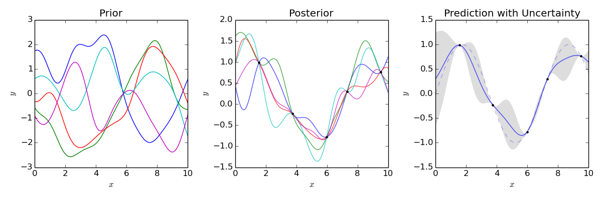

Apprentissage et données fonctionnelles:
Application au problème de la détection dans le sport de haut niveau
Arthur LEROY (MAP5 - IRMES)
Servane GEY (MAP5) - Jean-François TOUSSAINT (IRMES)
Jérôme DEDECKER (MAP5)
Pierre LATOUCHE (MAP5) - Benjamin GUEDJ (INRIA)
Soutenance de mi-thèse - 24 mai 2019
Contexte
La détection aujourd’hui :
\(\rightarrow\) Meilleurs jeunes + intuition entraineurs
G. Boccia et al. (2017) :
\(\simeq\) 60% des top jeunes à 16 ans ne maintiennent pas leur niveau étant adultes
Philip E. Kearney & Philip R. Hayes (2018) :
\(\simeq\) 10% seulement du top 20 sénior était
top 20 en - 13 ans
Approche data-driven
Objectifs: Clustering et prédiction de séries temporelles. Problèmes classiques mais données très irrégulières:
- Nombre d’observations différents entre individus
- Instants d’observation différents entre individus
- Peu d’observations par individu
\(\rightarrow\) Analyse de données fonctionnelles
Les données
Base de données de la Fédération Française de Natation sur l’exhausitivité des performances des licenciés depuis 2002 :
- 10 000 000 performances
- \(\simeq\) X0 000 observations et \(\simeq\) 1 000 individus par épreuves

Les données
Base de données de la Fédération Française de Natation sur l’exhausitivité des performances des licenciés depuis 2002 :
- 10 000 000 performances
- \(\simeq\) X0 000 observations et \(\simeq\) 1 000 individus par épreuves

Les données
Base de données de la Fédération Française de Natation sur l’exhausitivité des performances des licenciés depuis 2002 :
- 10 000 000 performances
- \(\simeq\) X0 000 observations et \(\simeq\) 1 000 individus par épreuves

Les données
Base de données de la Fédération Française de Natation sur l’exhausitivité des performances des licenciés depuis 2002 :
- 10 000 000 performances
- \(\simeq\) X0 000 observations et \(\simeq\) 1 000 individus par épreuves
- Lissage par fonctions de bases B-splines

Approche paramétrique
Donnée fonctionnelle \(\simeq\) coefficients \(\alpha_k\) des B-splines :
\[y_i(t) = \sum\limits_{k=1}^{K}{\alpha_k B_k(t)}\]
Clustering: Algo FunHDDC (mélange Gaussienne + EM)
Bouveyron & Jacques - 2011
Utilisation version multidimensionnelle : courbe + dérivée \(\rightarrow\) information de niveau et de dynamique de progression
Clustering de courbes
Résultats:
- Plus d’informations en ajoutant courbes + dérivées
- Groupes cohérents pour les experts sportifs

Clustering de courbes
Résultats:
- Plus d’informations en ajoutant courbes + dérivées
- Groupes cohérents pour les experts sportifs

Les limites
- Quelques modélisations individuelles insatisfaisantes
- Pas d’information sur l’incertitude de modélisation
- Limites de l’approche paramétrique pour la prédiction
En résumé: cadre paramétrique + fréquentiste valide pour étudier des moyennes de groupes mais insuffisant pour des prédictions individuelles fiables.
\(\rightarrow\) Cadre probabiliste non paramétrique des processus Gaussiens
Régression par Processus Gaussiens
Bishop - 2006 | Rasmussen & Williams - 2006
GPR : méthode à noyau pour estimer \(f\) lorsque:
\[y = f(x) +\epsilon\]
\(\rightarrow\) Pas de restrictions sur \(f\) mais une probabilité a priori
\[f \sim \mathcal{GP}(0,C(\cdot,\cdot))\]
Exemple de noyau exponentiel pour fonction de covariance: \[cov(f(x),f(x'))= C(x,x') = \alpha exp(- \dfrac{1}{2\theta^2} |x - x'|^2) + \delta_{ij}\sigma^2\] Forme du noyau \(\Rightarrow\) propriétés de \(f\) favorisées a priori
La prédiction
\(\textbf{y}_{N+1} = (y_1,...,y_{N+1})\) de loi jointe a priori: \[\textbf{y}_{N+1} \sim \mathcal{N}(0, C_{N+1}), \ C_{N+1} = \begin{pmatrix} C_N & k_{N+1} \\ k_{N+1}^T & c_{N+1} \end{pmatrix}\]
Or, si la loi jointe est Gaussienne, la conditionnelle aussi et:
\[y_{N+1}|\textbf{y}_{N}, \textbf{x}_{N+1} \sim \mathcal{N}(k^T C_N^{-1}\textbf{y}_{N}, c_{N+1}- k_{N+1}^T C_{N+1}k_{N+1}) \]
- Prédiction: \(\hat{y}_{N+1} = \mathbb{E}[y_{N+1}|\textbf{y}_{N}, \textbf{x}_{N+1}]\)
- Incertitude: IC avec \(\mathbb{V}[y_{N+1}|\textbf{y}_{N}, \textbf{x}_{N+1}]\)
La GPR en image

Principales difficultés:
- Définir fonction de covariance avec propriétés voulues
- Estimation en \(O(N^3)\) (inversion matrice \(N \times N\))
Une modélisation cohérente
Estimation d’un GP par individu:
- Incertitude: Ok
- Cohérence: A revoir

\(\rightarrow\) Utilisation d’un modèle mixte
Le modèle GPR-ME
Shi & Wang - 2008 | Wang & Khardon - 2012 | Yang & al - 2017
\[Y_i(t) = \mu_0(t) + f_i(t) + \epsilon_i\] avec:
- \(\mu_0(\cdot) \sim \mathcal{GP}(0, K_{\theta_0}(\cdot,\cdot))\)
- \(f_i(\cdot) \sim \mathcal{GP}(0, \Sigma_{\theta_i}(\cdot,\cdot)), \ f_i \perp \!\!\! \perp\)
- \(\epsilon_i \sim \mathcal{N}(0, \sigma^2), \ \epsilon_i \perp \!\!\! \perp\)
On a donc:
\[Y_i(\cdot) \vert \mu_0 \sim \mathcal{GP}(\mu_0(\cdot), \Sigma_{\theta_i}(\cdot,\cdot) + \sigma^2), \ Y_i \vert \mu_0 \perp \!\!\! \perp \]
Apprentissage des HP et \(\mu_0\)
\(\textbf{y} = (y_1^1,\dots,y_i^k,\dots,y_M^{N_M})^T\)
\(\textbf{t} = (t_1^1,\dots,t_i^k,\dots,t_M^{N_M})^T\)
\(\Theta = \{ \theta_0, (\theta_i)_i, \sigma^2 \}\)
Etape E: Calculer la loi a posteriori
\[p(\mu_0(\textbf{t}) \vert \textbf{t}, \textbf{y}, \Theta) = \mathcal{N}( \hat{\mu}_0(\textbf{t}), \hat{K})\]
Sous réserve que \(K_{\theta_0}\) soit diagonale par blocs
Etape M: Estimer \(\Theta\)
\[\hat{\Theta} = \underset{\Theta}{\arg\max} \ \mathbb{E}_{\mu_0} [ log \ p(\textbf{y}, \mu_0(\textbf{t}) \vert \textbf{t}, \Theta ) \ \vert \Theta]\]
La prédiction (travail en cours)
Pour un nouveau temps \(t_i^*\), prédire \(y_i^*\).
Problème: Que vaut \(\mu_0(t_i^*)\) ?
Une fois résolu, on aura:
\[y_i^* \vert \textbf{y}_i, \textbf{t}_i, t_i^*, \mu_0 \sim \mathcal{N}(m^*, v^*)\]
Prédiction:
\(m^* = \mu_0(t_i^*) + \Sigma_{\theta_i}(\textbf{t}_i,t^*)^T \Sigma_{\theta_i}^{-1}\textbf{y}_i\)
Incertitude: \(v^* = \Sigma_{\theta_i}(t^*,t^*) - \Sigma_{\theta_i}(\textbf{t}_i,t^*)^T \Sigma_{\theta_i}^{-1}\Sigma_{\theta_i}(\textbf{t}_i,t^*)\)
Implémentation et applications
- Modification des systèmes de sélection
- Déploiement d’une appli web sur les serveurs FFN et formation des cadres techniques
Perspectives
Mélange de GP pour une prédiction cluster-spécifique
Etude et design de différentes fonctions de covariance
Utilisation d’autres variables, régression fonctionnelle multivariée (et/ou mixte)
Application à d’autres sports (Athlétisme, Aviron, …) et implémentation
Références
Functional Data Analysis - Ramsay & Silverman - 2005
Pattern Recognition and Machine Learning - Bishop - 2006
Gaussian processes for machine learning - Rasmussen & Williams - 2006
Curve prediction and clustering with mixtures of Gaussian process functional regression models - Shi & Wang - 2008
Model-based clustering of time series in group-specific functional subspaces - Bouveryron & Jacques - 2011
Gaussian Process Regression Analysis for Functional - Shi & Choi - 2011 Data.
Nonparametric Bayesian Mixed-effect Model: a Sparse Gaussian Process Approach - Wang & Khardon - 2012
Career Performance Trajectories in Track and Field Jumping Events from Youth to Senior […] - Boccia & al - 2017
Efficient Bayesian hierarchical functional data analysis with basis function approximations […] - Yang & al - 2017
Excelling at youth level in competitive track and field […] - Kearney & Hayes - 2018
Functional Data Analysis in Sport Science: Example of Swimmers’ Progression Curves Clustering - Leroy & al. - 2018